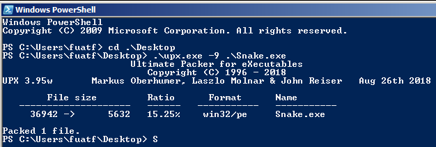
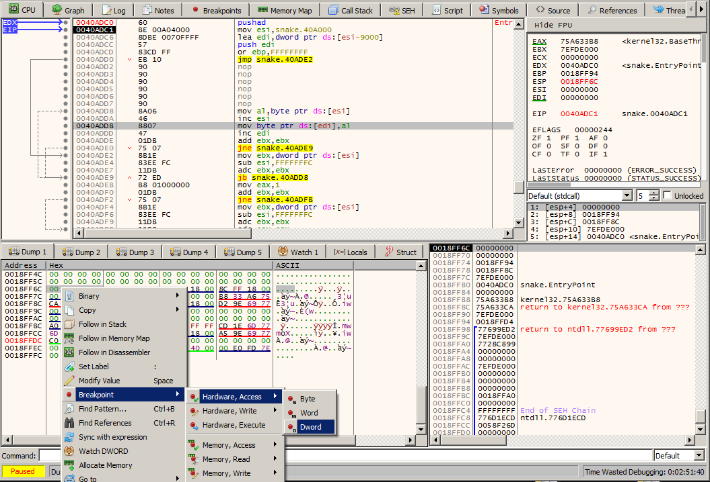
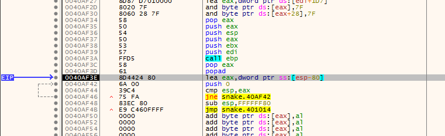
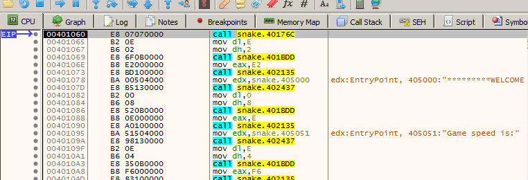
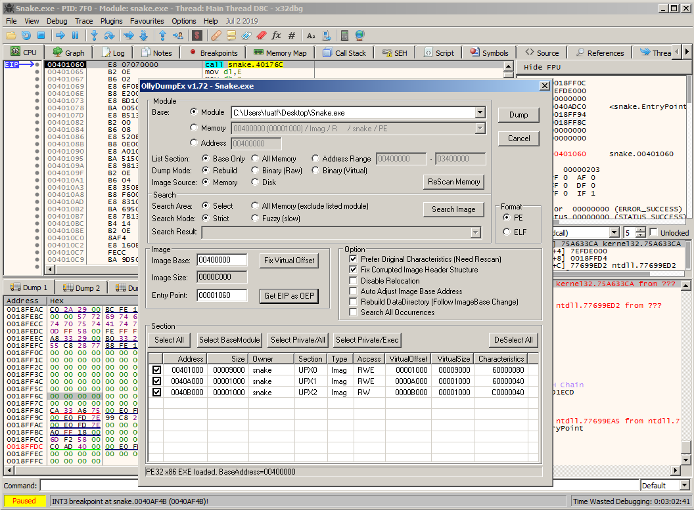
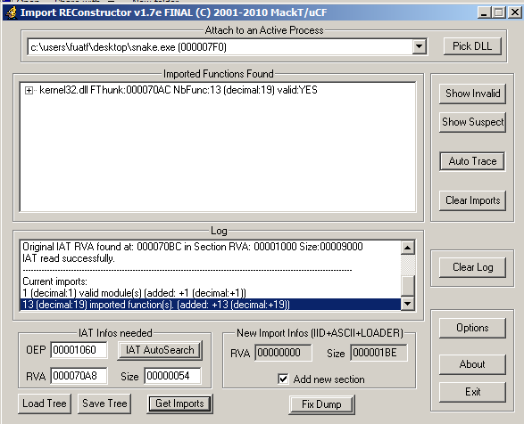

Upx manual unpacking
Merhabalar. Bu yazımda upx ile packlenmis executable dosyayı manuel olarak unpack edeceğiz. Dosyamız basit bir yılan oyunu. Aşağıdaki şekilde görüldüğü gibi UPX 3.95 ile pack edilmiş.
Bu işlemi yapmak için öncelikle packerlarin nasıl çalıştığını bilmemiz gerekiyor. Packerler bir executable dosyanın çalıştırılabilir kısmını sıkıştırıp veri olarak depolarlar. Çalıştırma zamanında ise sıkıştırılmış kısmı açıp çalıştırırlar. Böylece hem dosyanın boyutu küçülür hem de dosyayı analiz etmek isteyenlerin işi zorlaşır. Şimdi karşımızda sıkıştırılmış bir dosya var. Bizim yapmamız gereken ise bu dosyanın çalıştırılma zamanında decompress işlemini bulup düzeltilmiş çalıştırılabilir halini kaydetmek. Bunu yapmak için öncelikle dosyamızı x32dbg ile açıyoruz ve entryPointe geliyoruz. Şimdi programımızın kendini decompress ettiği yeri bulmamız gerekiyor. Program kendini stack'e yazacak ve burada decompress işlemini gerçekleştirecek. O halde espyi takip edeceğiz. Programın ilk instructioni pushad. Programı ilk instruction için çalıştırıyoruz. Pushadd tüm genel amaçlı yazmaçlara atama yapacak. Ardından esp pointerini takip edebilirz. Bunun için esp'ye sağ tık yapıp follow in dump diyouz. Şimdi espnin memoryde gösterdiği yeri seçip hardware breakpoint koyuyoruz. Böylece stackin bu alanında veri okunur veya yazılırken program duracak.
Şimdi programı tekrar çalıştırıyoruz ve eip şuraya geliyor:
Popad registeri genelral purpose registerleri stacke yazar. Aradığımız şey de tam olarak böyle bir şeydi. Sonuçta program artık farklı bir yerde çalışmaya devam edecek. Şu an registerlarını tekrar kullanabilmek için stack'te depoluyor. Program bir süre stacke 0 pushladıktan sonra bir jump işlemi yapıyor. Jmp snake.401014'e breakpoint koyup programı Çalıştırıyoruz , arından jump edilen yere gidiyoruz. Orası da bizi başka bir yere jump ediyor ve şöyle bir yere geliyoruz.
İşte burası programın unpack edilmiş hali. Burda OllyDumpEx plugini ile programın anlık dumpını alıyoruz.
Burada önemli bir nokta var. Bu dump ayrı bir çalıştırılabilir dosya olacak. Bu dosyanın headerinde tutulan original entry point bilgisini girmemiz gerekiyor. Bu değer eipin bu kısma geldiğindeki değerdir. Şu anki adresimiz 401060,image base'imiz 400000.Bu durumda oep değerimiz 1060 olur. Get eip as oep butonu bunu bizim için yapıyor. Butona tıklayıp dump diyoruz. Ancak hala bitmedi. Programımızın bu kısmı çalışırken programın kalan kısmından import adres table bilgisini alıyor. Bunu düzeltmek için de ImpREC adındaki toolu kullanacağız. Hali hazırda debugger üzerinde çalışan snake.exe uygulamasını seçip oep değerini girdikten sonra IAT AutoSearch butonuna tıklayıp import table'ini aratıyoruz. Ardından get imports dediğimizde ImpREC importlari otomatik olarak alıyor.
Son olarak fix Dump butonuna tıklayarak az önce dump ettiğimiz Snake_dump.exe dosyasını seçiyoruz. Bu program da bize Snake_dump_.exe adındaki çalıştırılabilir dosyayı veriyor.